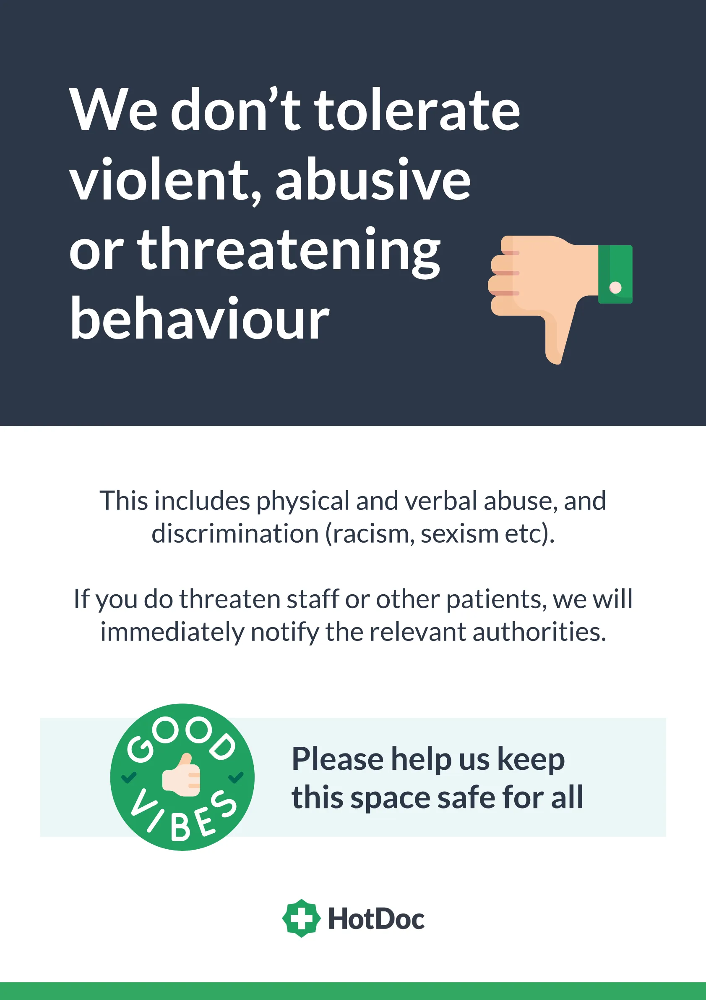

Our shared commitment.
Healthcare works best when people feel safe, heard and respected. This Code of Conduct describes the everyday behaviour that helps make Woolloongabba Medical Centre a considerate place to receive care and to work. It applies to patients, accompanying visitors and anyone using our shared spaces.
We recognise that illness, pain, worry or difficult circumstances can affect how people feel and communicate. Our team will aim to respond calmly, listen to concerns and discuss reasonable support or accessibility arrangements where possible.
What we ask of patients and visitors.
- Speak to practitioners, staff, other patients and visitors with courtesy and respect.
- Follow reasonable infection prevention and safety instructions, including advice about respiratory symptoms and hand hygiene.
- Share accurate health and contact information where you can, and tell your clinician when something is unclear or you need assistance.
- Respect other people's privacy, personal space and appointments, including in reception and waiting areas.
- Let reception know if you need to cancel, arrive late, require communication support or need an access adjustment.
We welcome questions and understand that patients may disagree with a recommendation. You can raise a concern respectfully and ask for information about your options.
Behaviour that places others at risk.
To protect patients, families and our team, we do not accept:
- Abusive, aggressive, intimidating or threatening behaviour, including verbal or physical aggression.
- Harassment, bullying or discriminatory remarks or conduct.
- Violence, deliberate property damage or behaviour that creates an unsafe environment.
- Attending while significantly affected by alcohol or illicit drugs when this compromises safety or appropriate care.
- Refusing reasonable safety directions in a way that places others at risk.
If someone's health or safety is at immediate risk, staff will prioritise an appropriate safety response. Anyone needing urgent medical attention should tell staff or seek emergency assistance; safety concerns will not be used as a substitute for appropriate clinical assessment.
Children and accompanying visitors.
Children are welcome at the practice. Parents and carers are asked to supervise children in waiting and shared areas, keeping entrances, corridors and clinical spaces safe and accessible. We ask accompanying visitors to respect other patients' privacy and follow staff directions about consultation rooms and shared spaces.
If you need to bring a support person or have specific care or accessibility needs, please let reception know so we can discuss suitable arrangements.
Mobile phones, photography and devices.
Please keep phone conversations and device sounds at a considerate volume. To protect privacy, do not photograph, film or record other patients, visitors or staff without appropriate permission. Ask your clinician before making a recording during a consultation, and respect any privacy or safety arrangements that apply.
Our responsibility to you.
We are committed to treating people with dignity, communicating respectfully, supporting reasonable accessibility needs and protecting patient privacy. Staff and clinicians will explain relevant practice procedures and how to raise questions or feedback. We strive to respond to concerns fairly and without unnecessary confrontation.
Read more about your rights and responsibilities and accessibility at the practice.
If a problem occurs.
When behaviour disrupts care or creates a safety concern, our team may first explain the concern, ask for the behaviour to stop, or offer a practical way to continue the conversation safely. Depending on the circumstances, we may:
- Ask a person to move to another area or leave the premises when it is safe and appropriate to do so.
- Arrange another way to communicate, schedule care or review future attendance arrangements.
- Contact security or police where threats, violence or serious risks make this necessary.
- Consider alternative ongoing care arrangements when a safe therapeutic relationship cannot be maintained, with appropriate communication and continuity-of-care planning.
Decisions are made according to the situation, including clinical urgency, patient needs and relevant obligations. We will not treat the above as automatic penalties. In a medical emergency, call Triple Zero (000).
Questions, feedback and concerns.
If you are worried about an interaction or would like to explain a concern, please speak with reception or use our Feedback & Complaints pathway. You can also contact the practice for help with accessibility, communication or visiting arrangements.